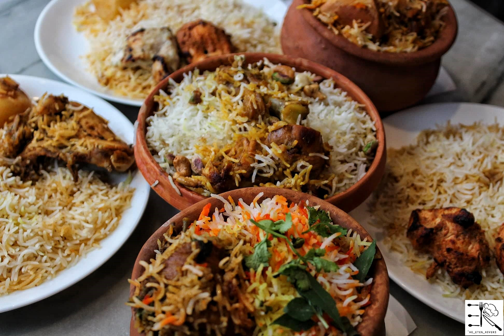
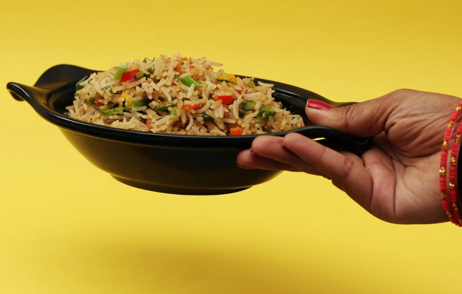

NB:Prima di iniziare, clicca sull' AUDIO per ascoltare un piacevole SOTTOFONDO MUSICALE
Il Pakistan uno dei paesi più ricchi di storia e cultura del mondo dove il valore delle antiche tradizioni rimasto immutato nel tempo. Purtroppo per questa perla islamica dell'Asia meridionale, il sesto paese più popoloso del mondo, è caratterizzata da condizioni di vita piuttosto difficili a causa dei continui disastri naturali e dalle sfide sui fronti politico ed economico. Il menù è prevalentemente a base di pane fritto, carne al curry, polenta di lenticchie, spinaci speziati, cavoli, piselli e riso; una delle evidenti differenze consiste nel minor uso di spezie piccanti e nel frequente ricorso alloyoghurt, molto gradito in Pakistan perchè attenua l'intenso sapore del peperoncino. Oggi tratteremo:
Biryani
Tè Chai

IL PIATTO: BIRYANI
In Pakistan troverete una costellazione di piatti unici, ma, senza ombra di dubbio, il più emblematico e famoso, anche al di fuori dei suoi confini, è il biryani. Spicca come una gemma preziosa, acclamata non solo all’interno dei confini nazionali, ma ammirata e apprezzata in tutto il mondo per la sua unicità.
Dosi:
Dosi per: 6 persone
Difficoltà: media
Preparazione: 2 ore
Ingredienti:
Per la marinatura della carne:
1 pollo
25 ml di yogurt bianco
1 cucchiaio di succo di limone
1 cucchiaino di curry
1 cucchiaino di curcuma
1 spicchio di aglio
peperoncino in polvere
sale
Per la cottura:
1 cipolla
30 g di burro chiarificato
2 foglie di alloro
3-4 baccelli di cardamomo
3-4 chiodi di garofano
1 stecca di cannella
60 ml di yogurt
1 peperoncino
1 cucchiaino di curry
Per il riso:
360 g di riso basmati
720 g di acqua
1 pizzico di zafferano in polvetr
6 o 7 foglie di menta
sale grosso
Preparazione:
1) Per realizzare il biryani di pollo iniziate a tagliare il pollo in otto pezzi ed eliminate la pelle. Trasferitelo in una ciotola con gli ingredienti della marinatura: il succo di limone, lo yogurt, l'aglio schiacciato, curcuma, curry, peperoncino e un pizzico di sale
2) Mescolate bene il tutto in modo che la carne resti coperta in modo uniforme. Coprite con pellicola e trasferite in frigorifero a riposare per almeno 1 ora (e fino a mezza giornata di tempo). Al momento di procedere con la ricetta sciacquate il riso e lasciatelo a bagno per mezz'ora. Fate sciogliere il burro chiarificato in un tegame largo e dai bordi alti. Unite le foglie di alloro, la stecca di cannella, i chiodi di garofano, le stelle di anice e le capsule di cardamomo leggermente schiacciate.
3) Quando sfrigoleranno, aggiungete la cipolla facendola ben rosolare e infine unite il pollo.
4) Lasciate cuocere a fuoco vivo per qualche minuto girando i pezzi di carne per far partire la cottura in modo uniforme. Aggiungete lo yogurt, il curry, il peperoncino tritato, le foglie di menta e mescolate nuovamente lasciando amalgamare gli ingredienti al fondo del pollo.
5) Scolate il riso messo a bagno precedentemente e aggiungetelo al tegame del pollo con 720 g di acqua e lo zafferano in polvere, aggiustando con un presa di sale grosso. Portate a ebollizione quindi abbassate la fiamma, coprite e portate il riso a cottura mescolando di tanto in tanto.
6) Quando il riso è cotto e il liquido completamente assorbito, il biryani di pollo è pronto per essere servito.
Conservazione...
Il biryani di pollo si conserva in frigo, in un contenitore a chiusura ermetica, per 1-2 giorni massimo.
...e curiosità!
La sua origine esatta non è chiara, ma si pensa che abbia origini persiane o turche e sia stato introdotto in India durante l’impero Moghul. Oggi, il Biryani è ampiamente apprezzato in tutta l’India e il Pakistan, con molte varianti regionali che utilizzano diverse spezie e ingredienti.
Una delle ipotesi degli studiosi sull’origine del Biryani attribuisce a Mumtaz Mahal, sposa dell’imperatore Moghul Shah Jahan, il ruolo di aver dato vita alla ricetta tradizionale indiana. Questa sarebbe la seconda “meraviglia” legata a questa importante donna a cui si dice sia stato dedicato il Taj Mahal, il più grande monumento all’amore.
Si racconta che Mahal andò a visitare le truppe dell’imperatore dopo una campagna di battaglie. I soldati erano provati dalle fatiche della guerra e avevano bisogno di qualcosa che potesse ridare loro nuove energie. All’imperatrice venne allora in mente di far preparare ai guerrieri un calderone di riso basmati condito con carne di montone marinato insieme ad una miscela di yogurt e spezie.

LA BEVANDA: ROOHAFZA
Se avete voglia di provare una bevanda analcolica diversa, oggi vi proponiamo una delle bevande più tipiche di regioni come il Pakistan. Si chiama Rooh Afza ed è una bevanda estiva di colore rosso rubino con note dolci e floreali. Prepararla a casa non è poi così complicato. Ecco la ricetta della bevanda Rooh Afza spiegata passo per passo, in modo che possiate provare qualcosa di diverso e viaggiare in Pakistan attraverso le vostre papille gustative.
Come si prepara a casa?
Per prepararlo a casa sono necessari ingredienti come un barattolo di sciroppo Roohafza foglie di menta, succo di limone e di arancia, zucchero, alcune noci tritate, acqua o latte e ghiaccio.
Versate l’acqua o il latte in una ciotola. Aggiungere quindi i due cucchiai di sciroppo Rooh Afza e mescolare bene. Aggiungere quindi lo zucchero a piacere e aggiungere le foglie di menta, il succo di frutta, le noci e infine il ghiaccio. A seconda che si usi acqua o latte, il risultato sarà di colore rossastro o rosato. A volte si aggiunge anche della panna, per renderlo più simile a un frullato o a un dessert.
SPERIAMO CHE QUESTO VIAGGIO CULINARIO DI SAPORI AROMATICI E SQUISITI IN PAKISTAN VI SIA PIACIUTO! Ci vediamo al prossimo world wide foods...